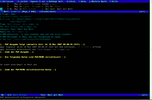

Mutt
Dieser Artikel wurde für die folgenden Ubuntu-Versionen getestet:
Ubuntu 14.04 Trusty Tahr
Zum Verständnis dieses Artikels sind folgende Seiten hilfreich:
 Das Programm Mutt
Das Programm Mutt  ist ein textbasierter E-Mail-Client, der abgesehen von einer graphischen Oberfläche keine funktionellen Wünsche offen lässt und zudem höchst konfigurierbar ist. Nicht umsonst lautet das Motto der Entwickler:
ist ein textbasierter E-Mail-Client, der abgesehen von einer graphischen Oberfläche keine funktionellen Wünsche offen lässt und zudem höchst konfigurierbar ist. Nicht umsonst lautet das Motto der Entwickler:
"All mail clients suck. This one just sucks less."
Damit beginnen aber auch schon die Hürden dieses Programms. Die nahezu grenzenlose Fülle an Konfigurationsmöglichkeiten macht den Einstieg sehr schwer und lässt Anwender, die Mutt einfach mal anschauen wollen, schnell den Mut(t) verlieren. Dieser Artikel soll beim Einstieg helfen und erläutert im Folgenden eine minimale Konfiguration, mit der man Mutt erst einmal dazu bewegt, die E-Mails zweier IMAP-Konten zu verwalten und Mails zu verschicken. Diese Konfiguration kann als Grundlage dienen, sich in die Tiefen der Mutt-Möglichkeiten zu stürzen.
Installation¶
 Mutt selbst kann keine Mails verschicken, sondern kann diese Aufgabe nur an Programme wie msmtp übertragen. Zum Empfangen und Filtern kann Mutt Programme wie Fetchmail und Procmail benutzen, die viele Anpassungsmöglichkeiten bieten, aber für den normalen Gebrauch von IMAP reichen Mutts eigene Fähigkeiten aus. Für die hier vorgestellte Konfiguration müssen also folgende Pakete installiert [1] werden:
mutt
msmtp
 mit apturl
mit apturl
Paketliste zum Kopieren:
sudo apt-get install mutt msmtp
sudo aptitude install mutt msmtp
Es existiert ein Paket namens msmtp-gnome, das einen Patch für die Integration mit dem gnome-keyring enthält, sodass die Passwörter nicht im Klartext oder umständlich mit gpg gespeichert werden müssen.
msmtp-gnome
mit apturl
Paketliste zum Kopieren:
sudo apt-get install msmtp-gnome
sudo aptitude install msmtp-gnome
Konfiguration¶
msmtp¶
Das Programm msmtp ermöglicht es, E-Mails über einen entfernten SMTP-Server, also z.B. den des E-Mail-Anbieters, zu verschicken. Konfiguriert wird es mit der Datei .msmtprc im Home-Ordner. Für unser Beispiel fügt man das folgende mit einem Texteditor [3] in diese Datei ein bzw. erstellt diese gegebenenfalls, indem man sie von /usr/share/doc/msmtp/examples/msmtprc-user.example kopiert.
#Die folgenden Einstellungen gelten für alle Accounts: defaults tls on tls_starttls on tls_certcheck off auth on #auskommentieren, wenn gewünscht: #logfile ~/.msmtp.log #Diese Einstellungen gelten für das Konto bei Googlemail: account Google host smtp.googlemail.com from login@googlemail.com user login@googlemail.com port 587 passwordeval gpg2 --no-tty -q -d ~/.msmtp-password.gmail.gpg #Das sind die Einstellungen für das Konto bei Web.de: account Webde host smtp.web.de from login@web.de user login@web.de port 587 passwordeval gpg2 --no-tty -q -d ~/.msmtp-password.webde.gpg #Das Web.de-Konto soll das Standard-Konto werden: account default: Webde
Folgender Befehl erstellt die Passwortdatei exemplarisch für gmail. Zunächst wird der gnupg-agent nach dem Masterpasswort fragen. Dann gibt man das Passwort im Klartext auf der Konsole ein, gefolgt von Return (für neue Zeile) und STRG-D (für EOF)
gpg2 --output ~/.msmtp-password.gmail.gpg -c
Wenn man möchte, kann man das Versenden einer E-Mail schon mal mit folgendem Befehl ausprobieren:
msmtp -a Google empfänger@adresse.de < e-mail.txt
Mutt¶
Mutt wird über die Datei .muttrc gesteuert, welche im Home-Verzeichnis liegt. Es bietet sich aber an, die Konfiguration auf mehrere Dateien aufzuteilen, wobei die einzelnen Dateien innerhalb von .muttrc mittels source pfad/zur/datei aufgerufen werden können. In unserem Fall haben wir die drei folgenden Konfigurationsdateien:
~/.muttrc
#Damit bringen wir Mutt unsere Login-Daten für die jeweiligen Accounts bei account-hook login@imap.web.de 'set imap_user=login imap_pass=passwort' account-hook login@imap.googlemail.com 'set imap_user=login imap_pass=passwort' #Wenn man die Mailbox wechselt, sollen die Server-Daten aktualisiert werden folder-hook login@imap.web.de 'source ~/.mutt/webde' folder-hook login@imap.googlemail.com 'source ~/.mutt/google' #optional, damit kann man in Mutt <Escape> 1 bzw. 2 drücken, um zwischen den Mailboxen zu wechseln macro index <esc>1 "<change-folder>imap://login@imap.web.de<enter>" macro index <esc>2 "<change-folder>imaps://login@imap.googlemail.com<enter>" macro index t "c=<tab><tab><tab>" #drücke t, um in den Ordnern des Postfaches zu navigieren #legt fest, welche Mailboxen zu Anfang bekannt sind und beim Start abgerufen werden sollen mailboxes imap://login@imap.web.de #sollte mutt nur langsam funktionieren, kannes eventuell hieran liegen mailboxes imaps://login@imap.googlemail.com/ #siehe auch http://blog.mafr.de/2012/09/09/mutt-too-many-errors/ #Beim Start soll das Web.de-Konto geöffnet sein source ~/.mutt/webde set sendmail="/usr/bin/msmtp" #Pfad zu dem Programm, das die Mails verschicken soll set envelope_from=yes #übergibt msmtp automatisch den richtigen Absender set edit_hdrs #Empfänger u.a. auch im Editor bearbeiten set signature ="~/.mutt/signatur" #Datei, die den Text der Signatur enthält set attribution="%f schrieb am %d:" #Zitatkennzeichnung in unserer Muttersprache :) set sort=threads #E-Mails werden nach Gesprächsverlauf und nach Datum sortiert set sort_aux=date-sent #set sort=date #würde alternativ zuerst nach Datum sortieren unset allow_8bit #u.U. verbesserte Darstellung von Umlauten set date_format="%a, %d. %b %H:%M" #gibt an, wie das Datum formatiert wird set index_format="%4C %Z %D %-22.22F (%?l?%4l&%4c?) %s" #Format der Mail-Übersicht set folder_format="%2C %8s %d %t %N %f" #Format des Datei-Browsers set pager_index_lines=10 #Anzahl der angezeigten Mails in der Übersicht #Editor, der zum Verfassen der E-Mail benutzt wird, hier Vim beginnend im Einfügemodus auf der ersten Leerzeile und Zeilenumbruch bei 70 Zeichen set editor="vim -c 'startinsert' -c 'set tw=70 et' -c 'set wrap' '+/^$'"
~/.mutt/webde
set from="login@web.de" set hostname="web.de" set imap_login="..." set imap_pass="..." set folder="imap://login@imap.web.de/" #Mailbox, die aufgerufen wird set postponed="=Entwurf" #Verzeichnis, in dem die Entwürfe abgelegt werden. Das = ist eine Abkürzung für den Inhalt von folder set record="=Gesendet" #Verzeichnis für die versendeten Mails set spoolfile="=INBOX" #Verzeichnis, das zu Beginn aufgerufen werden soll
~/.mutt/google
set from=login@googlemail.com set hostname=googlemail.com set imap_login="..." set imap_pass="..." set folder="imaps://login@imap.googlemail.com/" set postponed="=[Google Mail]/Entwürfe" set record="=[Google Mail]/Gesendet" set spoolfile="=INBOX"
Auch in diesen Dateien müssen natürlich alle Vorkommen von imap_login und imap_pass angepasst werden.
Die Datei .muttrc enthält ebenfalls die Zugangsdaten für die E-Mail-Provider im Klartext, deshalb sollten die Zugriffsrechte auch hier auf den Besitzer der Datei beschränkt werden [4].
Nun ist Mutt erst einmal einsatzfähig. Für die weitere Konfiguration sei auf die Links am Ende des Artikels verwiesen.
Bedienung¶
Mutt wird über den Befehl
mutt
gestartet.
Die meisten verfügbaren Befehle werden in der obersten Zeile angezeigt. Die nachfolgende Tabelle listet einige Befehle auf, die dort nicht angezeigt werden und für den Einstieg nützlich sind.
| nützliche Tastaturbefehle | |
| ⏎ | Mailbox/E-Mail öffnen, Eingaben bestätigen, in E-Mails eine Zeile weiterblättern |
| ⌫ | In E-Mails zurückblättern |
| In E-Mails eine Seite weiterblättern bzw. nächste E-Mail öffnen | |
| Y | Liste der Mailboxen aufrufen |
| C | wechseln der Mailbox ( Tab ⇆ Liefert eine Liste aller Mailboxen bzw. vervollständigt den Namen einer Mailbox) |
| ↑ , ↓ bzw. K , J | Zum Navigieren in Mailboxen |
| Tab ⇆ | Zur nächsten ungelesenen Nachricht springen |
| B | Bounce – Nachricht weiterleiten ohne den Inhalt zu bearbeiten |
| F | Nachricht weiterleiten |
| S | Nachricht in eine andere Mailbox verschieben |
| P | GPG-Menü öffnen |
| A | Absenderadresse in die Alias-Liste übernehmen |
Beim Wechseln der Mailboxen mit C Tab ⇆ gibt es jedoch das Problem, das u.U. nicht die Ordner der aktuellen Mailbox, sondern die der zuletzt gewählten angezeigt werden. Das gewünschte Verhalten ist mit C = Tab ⇆ Tab ⇆ Tab ⇆ zu erreichen, was in obiger Konfiguration auf die Taste T gelegt wurde.
In Mutt lassen sich alle Tastaturbelegungen an die persönlichen Bedürfnisse anpassen. Für detaillierte Informationen über Konfiguration und Bedienung sei abschließend noch einmal auf die Links verwiesen.
Adressbuch¶
Mutt bringt ein einfaches Adressbuch mit. Dazu trägt man folgendes zusätzlich in die Datei .muttrc ein:
set alias_file=~/.mutt/alias #Datei, in der die Kontakte gespeichert werden source ~/.mutt/alias #Aliasdatei einlesen, damit die Adressen gleich bekannt sind set reverse_alias #Bewirkt, dass in der E-Mail-Übersicht der Name statt der Absender-Adresse angezeigt wird, wenn er in der Alias-Datei steht
Einen Kontakt kann man jetzt entweder erstellen, indem man ihn einfach in dem Format
alias BEZEICHNUNG NAME DES KONTAKTES <MAIL@ADRESSE.DE>
in die Alias-Datei einträgt, oder in Mutt eine E-Mail des gewünschten Kontakts markiert und A drückt. Nun kann man in Mutt als Empfänger einer neuen Mail statt der Adresse die Bezeichnung des Kontakts eingeben ( Tab ⇆ zur Vervollständigung).
Urlview¶
Hat man das Programm
urlview
mit apturl
Paketliste zum Kopieren:
sudo apt-get install urlview
sudo aptitude install urlview
installiert, kann man die Zeilen
macro index \cb |urlview\n macro pager \cb |urlview\n
zur Mutt-Konfiguration hinzufügen. Hat man jetzt eine E-Mail geöffnet, die eine Internetadresse enthält, kann man Strg B drücken und damit die Urls im Browser öffnen.
Mutt mit Fetchmail und Procmail¶
Möchte man POP3 nutzen oder aus anderen Gründen seine E-Mails gerne auf seinem lokalen Rechner haben, bietet sich die Benutzung von Fetchmail für das Abholen und Procmail zum Filtern an. Mit Mutt greift man dann auf seine Mails zu, indem man set folder="$HOME/Mail" setzt.
Fetchmail¶
Das Programm Fetchmail holt E-Mails von einem Server ab und legt sie in der lokalen Mailbox /var/mail/benutzer ab. Gesteuert wird Fetchmail über die Datei .fetchmailrc im Home-Verzeichnis. Den folgenden Quelltext in einen Editor schreiben [3] und die Datei als .fetchmailrc abspeichern. Dieser Quellcode ermöglicht eine einfache POP3-Abfrage (im Beispiel bei GMX).
poll pop.gmx.net protocol pop3 user "benutzername" password "passwort"
Achtung!
Da die Datei .fetchmailrc die Zugangsdaten für den E-Mail-Anbieter im Klartext enthält, müssen die Zugriffsrechte auf den Besitzer der Datei beschränkt werden [4].
Procmail¶
Das Programm Procmail verteilt E-Mails nach definierten Regeln in verschiedene Mailboxen. So kann die Post im lokalen Postfach gefiltert werden. Dazu wird im Home-Verzeichnis der Ordner Mail angelegt. Dieser dient später auch Mutt als Arbeitsverzeichnis. Die Steuerung von Procmail geschieht über die Datei .procmailrc, welche im Home-Verzeichnis liegt. Der folgende Quelltext wird in einen Editor eingegeben [3] und unter .procmailrc gespeichert. Der Quelltext beschreibt eine einfache Filterung nach Begriffen im Kopf einer E-Mail. Die erkannten E-Mails werden dann in verschiedene Mailboxen (hier im Beispiel: freunde, arbeit, chef und spam) in ~/Mail kopiert.
MAILDIR=$HOME/Mail # Dieses Verzeichnis muss existieren
LOGFILE=$HOME/.procmaillog # Name der Protokolldatei
LOGABSTRACT=no
VERBOSE=off
# E-Mails von diesen Personen immer erlauben (Whitelist)
# eine Filterregel (Rezept genannt) beginnt immer mit :0 , ohne die Angabe von weiteren Parameteren
:0 # wird der Mail-Header mittels egrep durchsucht
* person # Suchmuster beginnen immer mit einem * , gefolgt vom Suchbegriff
$MAILDIR/freunde # gibt die Mailbox an, in welche eine entsprechende Mail verschoben wird
:0 # enthält ein Rezept mehrere Suchbegriffe, so werden diese durch ein logisches UND verknüpft
* @arbeit.de # eine logische ODER-Verknüpfung gibt es leider nicht
* chef
$MAILDIR/chef
:0
* @arbeit.de
$MAILDIR/arbeit
# Spam aussortieren
:0
* cash
$MAILDIR/spam
:0
* money
$MAILDIR/spam
:0
* credit
$MAILDIR/spam
:0
* @werbung.de
$MAILDIR/spam Nun kann man Fetchmail und Procmail schon einmal testen. Dazu den folgenden Befehl in ein Terminal eingeben[2]:
fetchmail -kv -m "/usr/bin/procmail -d %T"
Wenn für alle in .procmailrc definierten Regeln eine entsprechende E-Mail abgeholt wurde, existieren nun im Verzeichnis ~/Mail die entsprechenden Dateien (hier im Beispiel: freunde, arbeit, chef und spam).
Links¶
abook
- Adressbuch für MuttMutt und dieses HTML
 - Blogbeitrag, 09/2013
- Blogbeitrag, 09/2013Mutt mit allen Raffinessen nutzen
- Artikel LinuxUser, 05/2007Einrichtungsanleitung
- auf Pro-Linux.de, 05/2003Mutt auf Linupedia
- Sehr ausführliche Anleitung zur Einrichtungmailx
- alternative Möglichkeit, E-Mails (mit mailx) auf der Kommandozeile zu verschickenAlpine – Weiterentwicklung von Pine und Alternative zu Mutt; in den offiziellen Paketquellen enthalten
- Erstellt mit Inyoka
-
 2004 – 2017 ubuntuusers.de • Einige Rechte vorbehalten
2004 – 2017 ubuntuusers.de • Einige Rechte vorbehalten
Lizenz • Kontakt • Datenschutz • Impressum • Serverstatus -
Serverhousing gespendet von